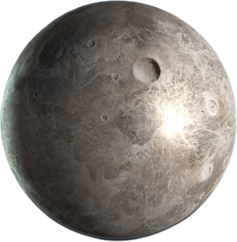

Cérès, est une planète naine du Système solaire ainsi que le plus gros astéroïde de la ceinture principale; c'est d'ailleurs la seule planète naine à avoir été classé comme planète à sa découverte en 1801, puis rétrogradé en tant qu'astéroïde, pour au final prendre le statut de planète naine par l'Union astronomique internationale en 2006. Elle a un diamètre d'environ 950 kilomètre et une masse qui représente environ le tiers de la masse totale de cette ceinture.